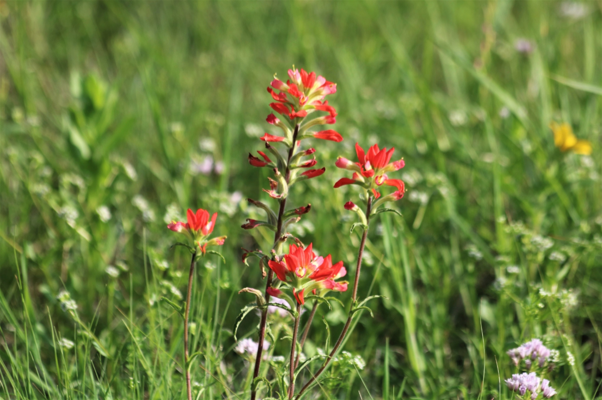
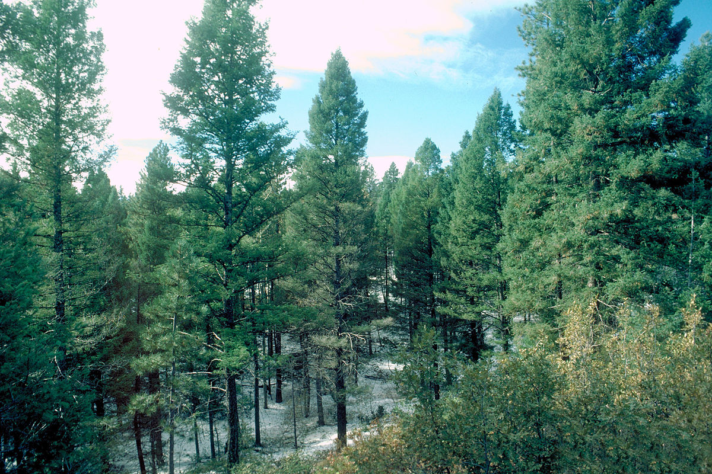
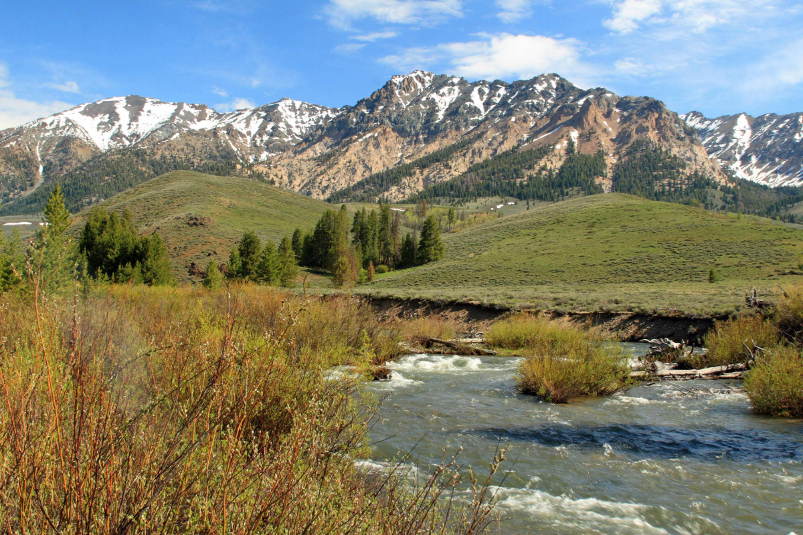
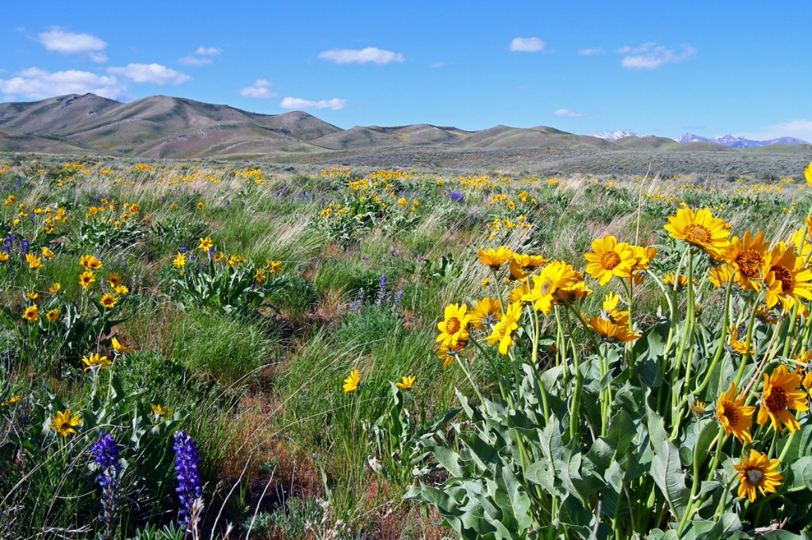

Flora

Thanks to its large size, the state of Idaho enjoys a variety of different terrains in different regions, which also bring a variety of different plant species. Some species can be found throughout the state, while others are typically only found in one or two regions.

Northern Idaho
Northern Idaho is a rugged region largely made up of forest-trees such as Douglas fir, subalpine fir, Engelmann spruce, lodgepole pine, and ponderosa pine. We can also find western red cedar, showing the close proximity of the region to the maritime climate of the Pacific Coast.

Central Idaho
Central Idaho, with its numerous streams and canyons, houses in the higher elevations forest-trees such as Grand fir, western larch, and Douglas fir. The lower elevations of the region are home to meadows surrounded by Ponderosa pine and lodgepole pine.

Southern Idaho
In the lower elevations of Idaho, we often see brush steppe ecosystems, which include a variety of shrubs, grasses, and wildflowers that are adapted to arid conditions. Some of the species found in these areas include sagebrush, bitterbrush, and rabbitbrush. Along Idaho’s rivers and streams, we often find vegetation such as willows, cottonwoods, and sedges.